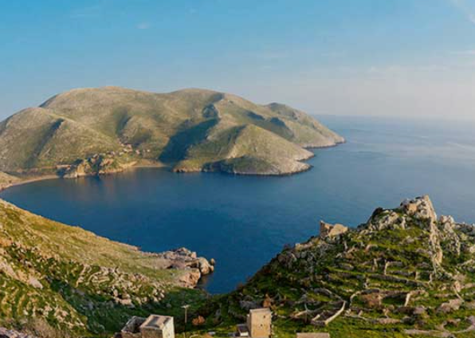
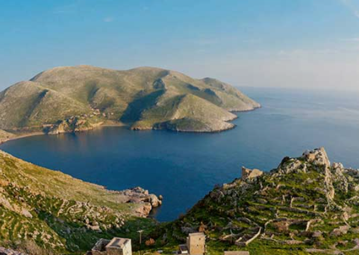
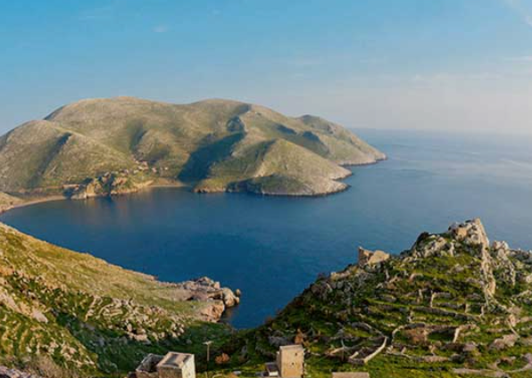

Греция находится в Южной Европе и занимает южную часть Балканского полуострова.
Территория страны делится на материковую часть, полуостров Пелопоннес и острова в Эгейском море
(крупнейшие – Крит, Лесбос, Эвбея).

Рельеф страны представляет собой чередование гористой местности и безлесых
выровненных участков, живописных плодородных долин, мелких бухт, заливов, островных территорий,
карстовых воронок и пещер в западной части Греции.
 
